You have the agent installed and you can find your way around the terminal. Now it should do some real work. We start with three small jobs that everyone knows and nobody enjoys: tidy a messy folder, clean a messy spreadsheet, and summarise a pile of PDFs into one table.
Work in a copy. The original stays untouched, whatever happens.
Describe the result, not the steps. Say what the finished thing should look like.
Ask for a record. A log of every change, a list of decisions, a list of assumptions.
Check by spot checks. Count before and after, check totals, pick three things at random and look at them yourself.
If it is wrong, say what is wrong. Correct the agent rather than start over.
This is a hands-on unit with example data only. Why the agent makes the mistakes it does comes next (How LLMs and agents work, and how they fail). Writing prompts in depth comes in Delegating well (Part 2).
Three small jobs eat a Monday morning
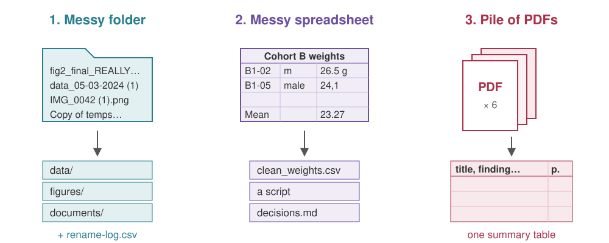
A shared folder where 40 files have piled up with names like fig2_final_REALLYfinal.png.
A spreadsheet from a student with merged headers, units in the cells and three spellings of “male”.
Six short reports that you need to summarise for a meeting, in one table.
Good first jobs are tedious, easy to check and easy to undo
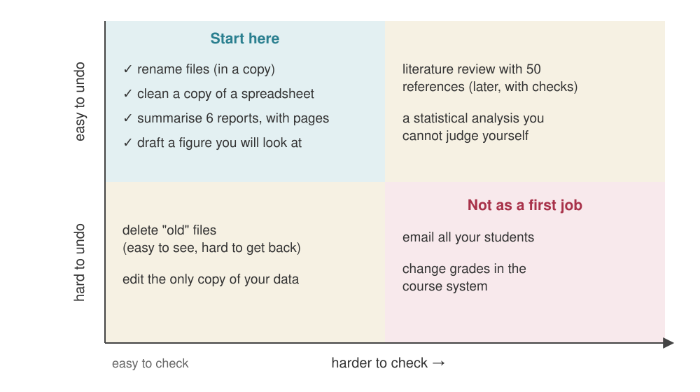
Today we use example data, not your own
Download one zip file per job from the exercise page: messy-folder.zip, messy-sheet.zip, reports.zip.
All three are synthetic: invented files, invented people, invented numbers.
Your own files wait until after Privacy, ethics and safety. There we look at what may be sent to a cloud service.
The example data has known answers, so you can check the agent against them.
Every delegation follows the same loop
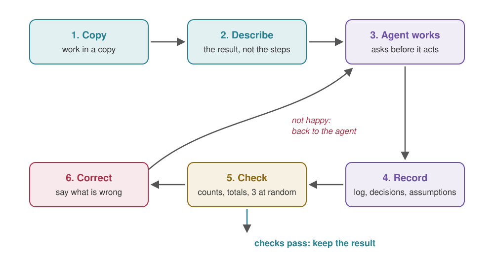
Rule 1: always work in a copy, never in the original
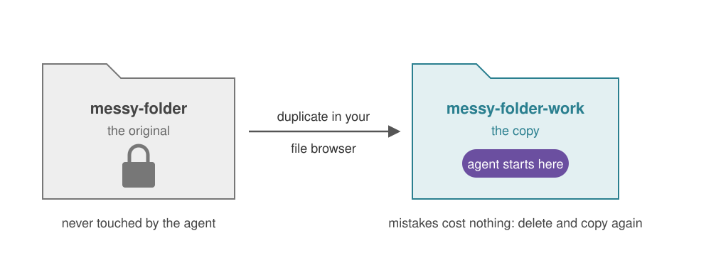
The agent can rename, move and overwrite files. In a copy, every mistake is free.
Keep the original somewhere the agent was not started from.
Making the copy takes ten seconds
Unzip the download. You now have, for example, a folder messy-folder.
Duplicate the folder in your file browser and rename the copy messy-folder-work.
In the terminal, go into the copy and start the agent there:
Claude Code
Codex
Go into the copy
cd messy-folder-work
cd messy-folder-work
Start the agent
claude
codex
If the agent asks whether you trust this folder, answer yes: it is your copy of example data.
Make the copy by hand: an agent that can make the copy can also reach the original.
Rule 2: describe the result you want, not the steps
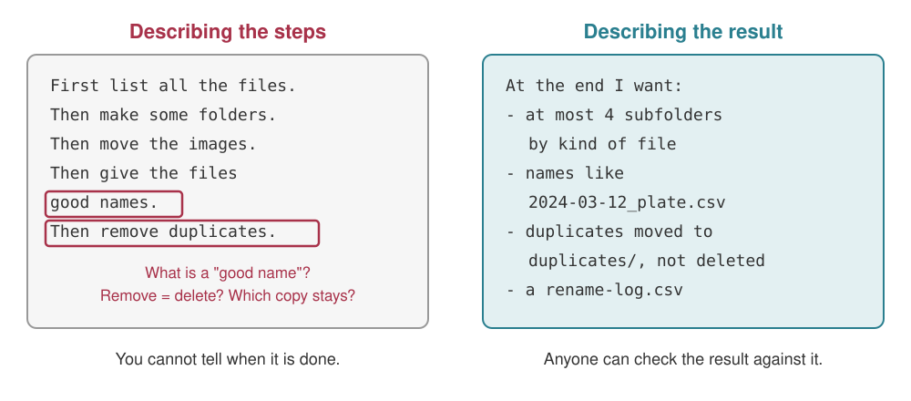
A description of the result answers four questions
What is there now? “This folder holds 40 files from a small lab project.”
What does done look like? “Subfolders by kind of file; names like 2024-03-12_plate-reader.csv.”
What about odd cases? “Exact duplicates go into a folder duplicates; do not delete anything.”
What must not happen? “Do not touch anything outside this folder.”
You do not need perfect wording. A few lines in plain language are enough. More on this in Delegating well.
Rule 3: ask for a record of every change
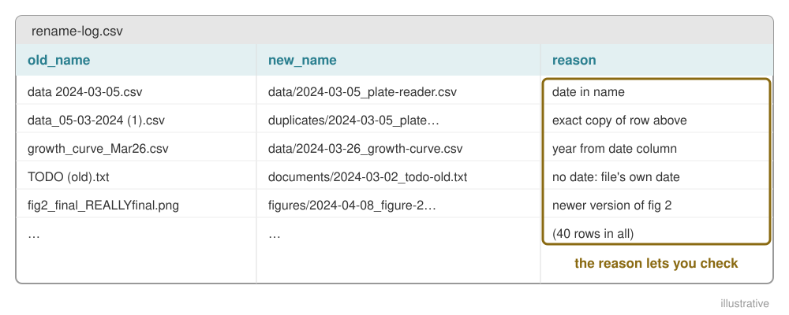
A log makes the job checkable: you can read what happened instead of guessing.
A log makes the job undoable: “use the log to put every file back” is one sentence.
Rule 4: ask the agent to list its assumptions
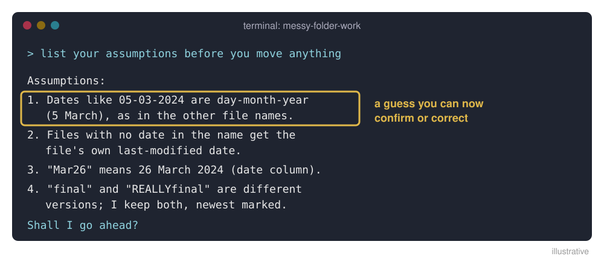
Rule 5: check with counts, totals and three random samples
Count before and after. 40 files in, 40 files out (or 37 plus 3 duplicates). 48 animals in, 48 rows out.
Check a total. If the sheet has a mean or a sum, the cleaned data should give the same number.
Spot-check three at random. Pick three rows, files or cells and compare them with the original yourself.
Use what you know. Mouse weights of 250 g, or a report dated 2052, are wrong whatever the agent says.
“It ran without errors” is not a check. “The agent says it checked” is not a check either.
Job 1: the folder has 40 files and no system
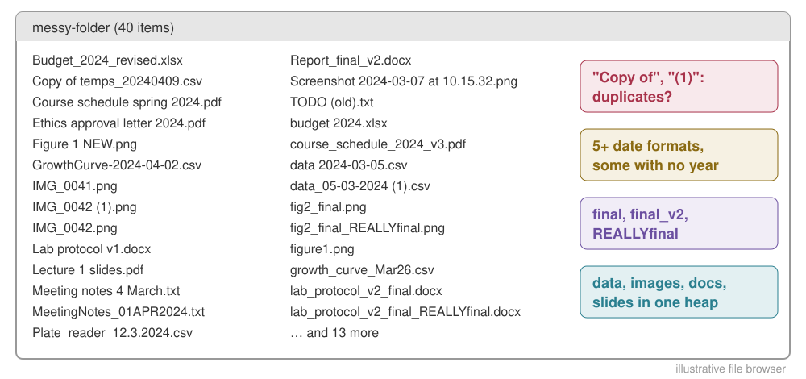
The prompt for job 1 describes the finished folder
This folder holds 40 files from a small lab project: data, images,
documents and slides. Organise it so that a colleague could find things.
What I want at the end:
- a few subfolders by kind of file (for example data, figures, documents)
- every file renamed as YYYY-MM-DD_short-description.ext, using the date
in the name, or the file's own date if the name has none
- exact duplicates moved to a folder called duplicates, not deleted
- a file rename-log.csv with one row per file: old path, new path, reason
- nothing deleted, and nothing outside this folder touched
Before you move anything, show me your plan and list your assumptions,
for example how you read dates like 05-03-2024.
The agent shows a plan, then asks before it moves files
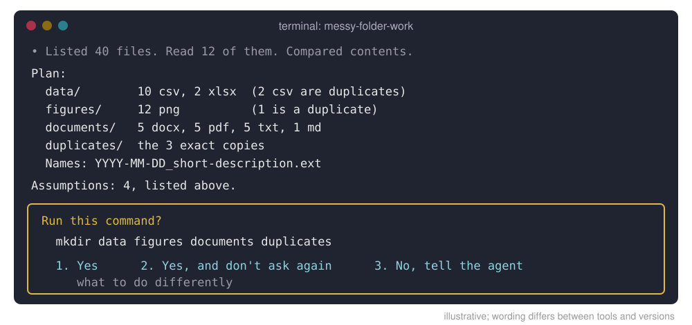
After: a structure you can explain in one sentence
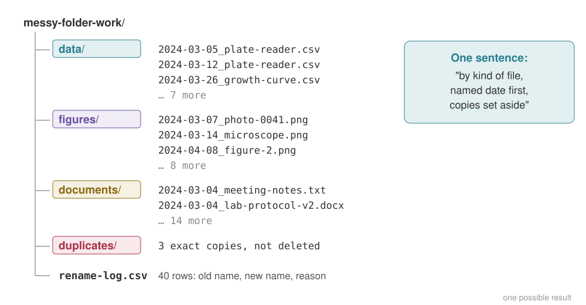
Count before and after: every file must be accounted for
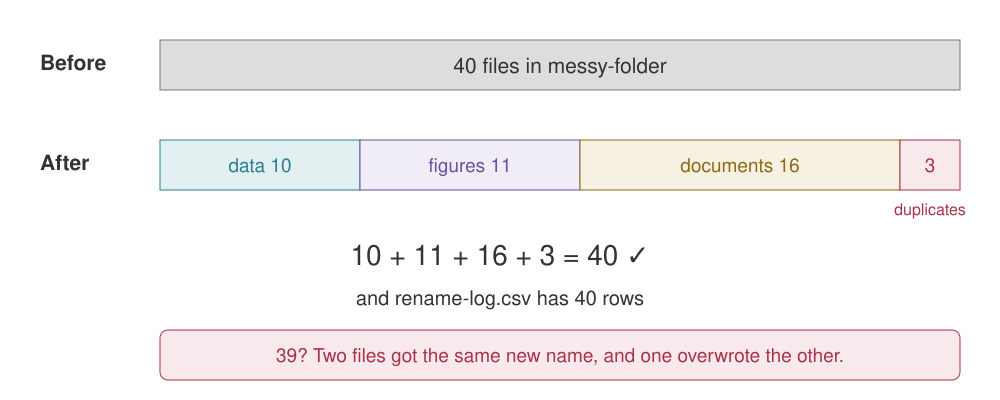
Dates in file names are where the agent has to guess
Original name
Possible readings
What settles it
data_05-03-2024 (1).csv
5 March or 3 May
it is a copy of data 2024-03-05.csv
microscope 14-03-24.png
14 March 2024
there is no month 14
growth_curve_Mar26.csv
26 March, which year?
the date column inside the file
Meeting notes 4 March.txt
4 March, which year?
the first line of the file
TODO (old).txt
no date in the name
the file’s own date (2 March 2024)
Check these rows in the rename log yourself. They are where a wrong guess hides.
Job 2: a sheet a person can read and a computer cannot
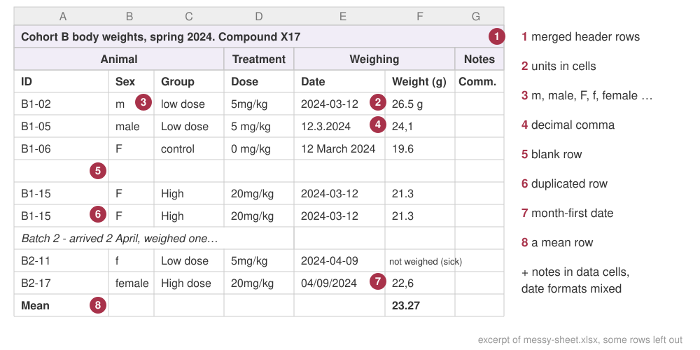
Each kind of mess needs a decision
Mess
Example
A decision someone has to make
Merged header rows
“Animal” over three columns
which row holds the column names
Units in cells
26.5 g, 5mg/kg
strip the unit; check it is the same unit everywhere
Decimal commas
24,1
read as 24.1
Several spellings
Male, male, M, m
map to one code
Mixed date formats
12/03/2024, 12.3.2024, 12 March 2024
day first or month first?
Notes in data cells
not weighed (sick), 23.7 (re-weighed)
empty, or keep the number?
Extra rows
blank rows, a batch note, a duplicate, a mean row
remove, and say so
None of these is hard. Together they are about 20 small decisions, and you want to see every one.
Ask for a script, not only a clean file
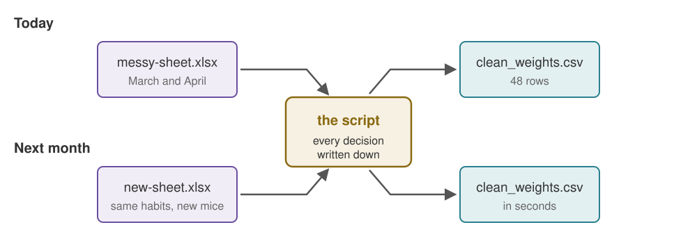
Next month the student sends a new sheet with the same mess. You rerun the script.
The script is also a record: every decision is written down in it.
The prompt for job 2 describes the table, the script and the record
messy-sheet.xlsx holds body weights from a mouse study. I want a tidy
table I can analyse, and a way to do the same next month.
What I want at the end:
- clean_weights.csv with one row per mouse and the columns animal_id,
sex (F or M), group (control, low or high), dose_mg_per_kg,
date_weighed (YYYY-MM-DD), weight_g (a number), comment
- a script that makes clean_weights.csv from the .xlsx file, so I can
rerun it on a new sheet
- decisions.md: a numbered list of every decision you made, including
each row you removed and how you read each odd value
Do not change messy-sheet.xlsx. If a value is unclear, leave it empty
and list it, rather than guess.
The decision list shows what the agent decided for you
An example of what you might get back (yours will differ):
1. Used row 3 as column names; dropped rows 1-2 (title and group headings).
2. Removed 4 blank rows, the "Batch 2 - arrived 2 April" note and the "Mean" row.
3. Removed row 20: an exact copy of row 19 (B1-15).
4. Mapped Male/male/M/m to M and Female/female/F/f to F (also "F " with a space).
5. Read "24,1" as 24.1 and removed "g" from weights.
6. B1-19 "23.7 (re-weighed)": kept 23.7, moved "re-weighed" to comment.
7. B2-11 "not weighed (sick)": weight left empty, note moved to comment.
8. Dose "-" and "none" in control rows read as 0.
9. Dates: read 12/03/2024 and 12.3.2024 as day first (12 March 2024).
Read it line by line and ask: would I have decided the same?
Check rows, categories and the total
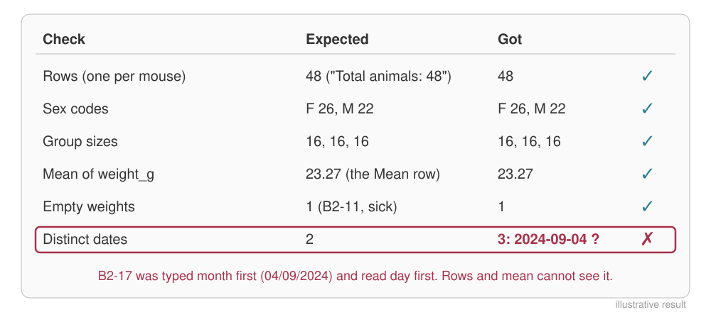
Job 3: six reports, one table, a page for every value
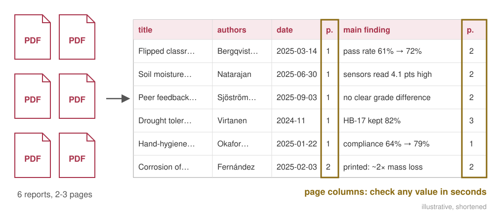
The prompt for job 3 asks for sources and for gaps
This folder holds six short PDF reports. Make one table,
reports_summary.csv, with one row per report and these columns:
file, title, authors, date (YYYY-MM-DD), main_finding, one_line_summary,
and the page number where you found the title, the date and the
main finding.
Use only what is written in the reports. If something is missing or
unclear, write "not stated" and tell me; do not fill it in.
At the end, list every value you were unsure about.
Spot-check three random cells against the page
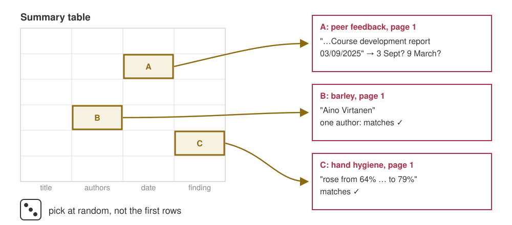
Summaries are where plausible but wrong details creep in
The peer-feedback report says on page 1:
A pilot at another department reported that peer feedback improved report grades by a full grade step.
and on page 2:
We found no clear difference in the final report grades: the mean grade was 3.9 with peer feedback and 3.8 without.
A quick summary may report “peer feedback improved grades by a full grade step”. That is another study’s result.
A date 03/09/2025 may be read as 9 March instead of 3 September.
A report dated “November 2024” may get an invented day.
These errors look exactly like correct values. Only the page reference lets you catch them quickly.
If the result is wrong, say what is wrong
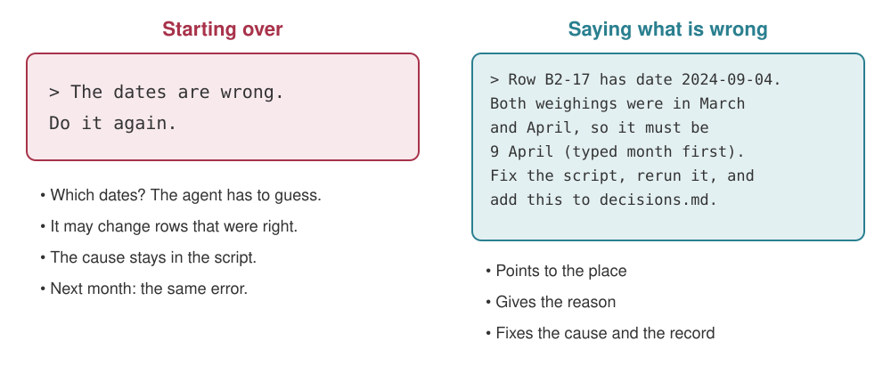
Good corrections point, explain and ask for the record to be updated
Instead of
Say
“The dates are wrong.”
“Row B2-17 has date 2024-09-04. Both weighings were in March and April 2024, so this must be 9 April. Fix the script and add the decision to decisions.md.”
“Do it again, the folder is a mess.”
“Put all images in one folder figures, not three. Keep everything else. Update rename-log.csv.”
“The table is wrong.”
“The main finding for the peer-feedback report is the earlier pilot, not this study. Use the result on page 2.”
Start over only when the agent misunderstood the whole task, or the session has gone round in circles.
Your session will look different from this lecture
The same prompt gives a different session each time: other steps, other wording, sometimes another result.
That is normal. Language models are not deterministic.
So we compare results, not sessions: the counts, the totals and the spot checks on the exercise page.
If your result differs from the expected one, that is not a failure. It is something to find out about.
Where this goes wrong
Working in the original. One bad rename command, and the old names are gone.
Vague descriptions. “Clean this up” gets the agent’s idea of clean, not yours.
No record. Without a log, you cannot check and you cannot undo.
Checking only the first rows. Errors hide in the odd cases: row 37, the file without a date.
Trusting the agent’s own check. “I verified the table” is a claim, not a check.
Overwritten files. Two files renamed to the same name: one is silently lost. Count.
Invented values. A gap filled with something plausible. Ask for “not stated” instead.
Your own data too early. Not before Privacy, ethics and safety.
A checklist for every delegation
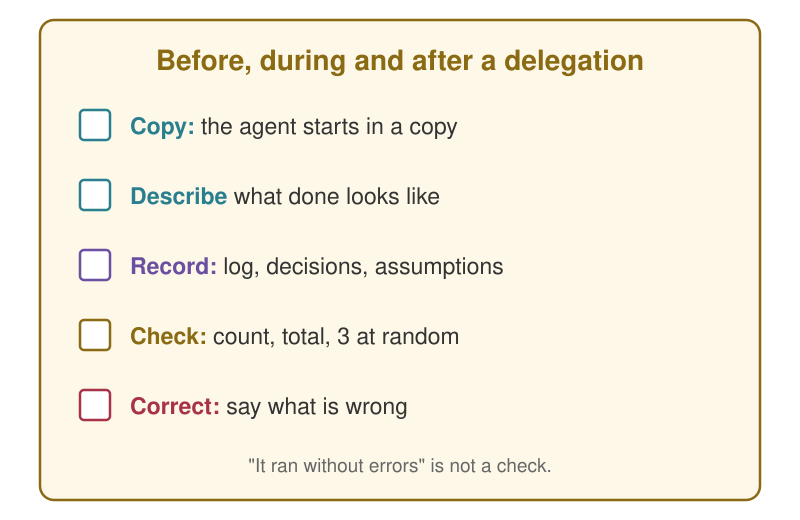
Summary
Concept
Key fact
Good first jobs
tedious, easy to check, easy to undo
Work in a copy
start the agent in the copy; the original stays untouched
Describe the result
what done looks like, odd cases, what must not happen
Ask for a record
rename log, decision list, page references
List assumptions
hidden guesses become a list you can read
A script, not only a file
rerun next month; the script records every decision
Count and total
40 files in, 40 accounted for; the mean matches the sheet
Spot checks
three at random, against the original, by you
“Not stated”
allow the agent to say it does not know
Correct, do not restart
point to the problem, explain, update the record
Next (How LLMs and agents work, and how they fail): what is going on inside the agent, and why it misreads dates, picks up another study’s result and says it has checked when it has not.